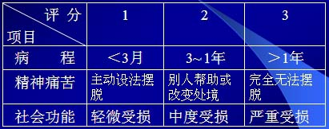

00:00
第四节 常见精神障碍
第一单元 精神分裂症及其它妄想性障碍
精神分裂症*
偏执性精神障碍（妄想性障碍）
急性短暂性精神障碍
一、精神分裂症
临床特点
1.病因未明。
2.以精神活动的不协调和脱离现实为特征。
意识清晰，但自知力基本丧失。
智力基本正常，但认知功能受损。
感知、思维、情感、意识和行为等障碍。
3.多起病于青壮年。
4.缓慢起病，病程迁延，部分患者可发展为精神活动衰退。
案例5 言行异常的女孩
某通讯连战士，女，18岁，活泼开朗，突然有一段时间变得沉默寡言，不爱与人交流，经常不参加集体活动，时常自言自语，或者突然大笑，周围同志对她很好，但她经常莫名其妙地指责别人说：“你为什么骂我！”班长觉得不对劲儿，找她谈话，她却回答说，连里有男同志喜欢她，其他人都嫉妒她，议论她，骂她，还有人往她的水杯里放药害她。
07:19
二、偏执性精神障碍
（妄想性精神障碍）
临床特点
起因不明；
系统性妄想，有一定现实性，不荒谬；
个别有幻觉，但历时短暂而不突出；
病前人格特征为固执、主观、敏感、猜疑、好强；
多起病于青壮年；
病程缓慢，人格完整，有一定工作和社会适应能力。
三、急性短暂性精神障碍
临床特点
1.2周内急性起病。
2.以精神症状为主。
3.起病前有相应的心因。
4.2-3个月内可完全恢复。
通常以精神分裂性症状为主。
如果病程不超过1个月，可诊断为分裂样精神障碍。
09：30
第二单元 心境障碍
心境障碍又称情感性精神障碍。
一、临床特点
1.以明显而持久的情绪高涨或情绪低落为主的一组精神障碍。
常伴有相应的认知、行为改变。严重者可伴有幻觉、妄想等精神病性症状。
2.反复发作，治疗缓解后或发作的间歇期精神状态基本正常。
3.每次发病常与应激性事件有关。
二、心境障碍的类型
（一）躁狂发作*
1.症状特点
情绪高涨、思维奔逸、精神运动性兴奋。
2.发作形式
轻型
无精神病性症状
有精神病性症状
复发性
13:36
（二）抑郁发作*
1.症状特点
情绪低落、思维缓慢、语言动作减少和迟缓。
2.发作形式
轻型
无精神病性症状
有精神病性症状
复发性
（三）双相障碍
（四）持续性心境障碍
1.特点：
发作严重程度较轻；
持续多年；
造成相当大的痛苦和功能损害。
2.发作形式：
环形心境障碍（反复出现情绪高涨或低落）
恶劣心境（持续出现情绪低落）
17:38
第三单元 神经症
一、定义
是一种精神障碍；
持久的心理冲突；
觉察到或体验到冲突，并深感痛苦；
无任何可证实的器质性病理基础。
是一组非精神病性的功能性障碍（具有可逆性）。
二、共同特征
1.意识的心理冲突：想控制但不能控制，自知力完整。
2.精神痛苦：往往主动求治。
3.持久性：一种持久的精神障碍。
4.功能影响：妨碍心理功能或社会功能，但相对良好。
5.无任何器质性病变：心因性的，有可逆性。
三、心理咨询师工作的重要领域：
1.神经症
2.神经症性问题（存在心理冲突，但未达到神经症的诊断标准的心理问题）
21:04
四、神经症的临床评定方法
（一）心理冲突的常形与变形
1.常形特点
与现实处境直接相联系
带有明显的道德性质
2.变形特点
涉及的仅是生活琐事，脱离现实处境范围
不带有明显的道德性质
常形是人们都有的经验，变形则是神经症性的。
24：40
（二）诊断标准（许又新）：
1.病程：
3个月为短程，评分1；
3个月~1年为中程，评分2；
1年以上为长程，评分3。
2.精神痛苦程度
可以主动设法摆脱，评分1；
需借助别人帮助或处境改变才能摆脱，评分2；
几乎完全无法摆脱，评分3。
3.社会功能
照常工作学习及人际交往只有轻微妨碍，评分1；
工作学习或人际交往效率显著下降，评分2；
完全不能工作学习，或某些必要的社会交往完全回避，评分3。
≤3分不诊断神经症；45分为可疑神经症；≥6分为神经症。
27:32
神经症与正常的分界线（许又新）

评分标准：
＜3分 非神经症
4～5分 可疑神经症
＞6分 确诊神经症
28:07
五、神经症的主要临床类型
1.恐怖症
广场恐怖
社交恐怖
特定恐怖
2.焦虑症
广泛性焦虑障碍
惊恐障碍
3.强迫性障碍（强迫症）
强迫思维
强迫行为
4.躯体形式障碍
疑病症
5.神经衰弱
28:59
第四单元 应激相关障碍
一、定义
应激相关障碍又称反应性精神障碍，心因性精神障碍。
是一组由心理、社会（环境）因素引起异常心理反应而导致的精神障碍。
二、分类
（一）急性应激障碍
急剧、严重的精神打击后数分钟或数小时内发病。
病程为数小时至数天。
主要表现
意识障碍
意识范围狭窄
定向障碍
言语缺乏条理
反应迟钝
可有人格解体
强烈恐惧
精神运动性兴奋或精神运动性抑制
31:31
（二）创伤后应激障碍（Posttraumaticstressdisorder。PTSD）
指在遭受强烈的或灾难性精神创伤事件后，延迟出现、长期持续的精神障碍。
潜伏期数周至数月不等，少数转为慢性可达数年。
主要表现：
1.创伤性体验反复出现
闯入性回忆（闪回）
痛苦梦境
扳机作用
2.对创伤性经历的选择性遗忘
3.情感淡漠、人际疏远、回避行为
4.自主神经过度兴奋，过度警觉，失眠
5.焦虑和抑郁，可有自杀观念。
（三）适应障碍
发生在重大的生活改变或应激性生活事件的适应期；
出现主观痛苦和情绪紊乱状态；
影响社会生活和行为表现；
通常在遭遇生活事件1个月内起病；
病程一般不超过6个月。
主要表现：
抑郁心境、焦虑，或者混合；
感到无力应付，难以维持现状；
一定程度的处理日常事物能力受损；
可伴有品行障碍，尤其是青少年。
37:16
第五单元 人格障碍及性心理障碍
一、人格障碍
偏执性人格障碍
分裂样人格障碍
反社会性人格障碍
冲动性人格障碍
表演性人格障碍
强迫性人格障碍
焦虑性人格障碍
依赖性人格障碍
二、性心理障碍
性身份障碍（如易性症等）
性偏好障碍（如恋物症、窥阴症等）
性指向障碍（如同性恋等）
39:16
第六单元 生理心理障碍
一、进食障碍
二、睡眠障碍
失眠症
嗜睡症
发作性睡眠异常（如睡行症、夜惊、梦魔等）
41:45
第七单元 癔症
一、特点：
无器质性病变，以人格倾向为基础，在心理社会因素影响下产生的精神障碍。
二、分类：
（一）分离性障碍
（二）转换性障碍（癔症性躯体形式障碍）
1.运动障碍：痉挛发作、行走不能
2.感觉障碍：失明
（三）癔症的特殊表现形式